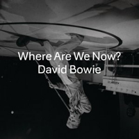
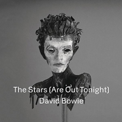
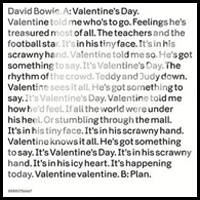
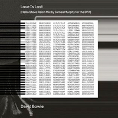

After a decade's silence, The Next Day was not only a surprise return, but a record that saw Bowie toying with his legacy. Inverting the Station To Station album cover, the bold square design returns; a gleeful subversion of one of the most iconic David Bowie album covers was all part of the game: in crossing out "Heroes"'s album title and sticking a big white square with the new title on top of Masayoshi Sukita's original photograph, Bowie and designer Jonathan Barnbrook intended the design as a statement on "forgetting or obliterating" the past. "I don't think anybody other than Bowie would have taken that risk," Barnbrook said, though it "puzzled a lot of people ... who just didn't get it". Barnbrook also created an entirely new font for the cover, Doctrine, which took its inspiration from the livery of North Korea's national airline.
Photographer: Masayoshi Sukita | Designer: Jonathan Barnbrook
THE NEXT DAY
Look into my eyes he tells her
I'm gonna say goodbye he says, yeah
Do not cry she begs of him goodbye, yeah
All that day she thinks of his love, yeah
They whip him through the streets and alleys there
The gormless and the baying crowd right there
They can't get enough of that doomsday song
They can't get enough of it all
Listen
Listen to the whores he tells her
He fashions paper sculptures of them
Then drags them to the river's bank in the cart
Their soggy paper bodies wash ashore in the dark
And the priest stiff in hate now demanding fun begin
Of his women dressed as men for the pleasure of that priest
Here I am, not quite dying
My body left to rot in a hollow tree
Its branches throwing shadows on the gallows for me
And the next day, and the next, and another day
Ignoring the pain of their particular diseases
They chase him through the alleys chase him down the steps
They haul him through the mud and they chant for his death
And drag him to the feet of the purple headed priest
First they give you everything that you want
Then they take back everything that you have
They live upon their feet and they die upon their knees
They can work with Satan while they dress like the saints
They know God exists for the Devil told them so
They scream my name aloud down into the well below
Here I am, not quite dying
My body left to rot in a hollow tree
Its branches throwing shadows on the gallows for me
And the next day, and the next, and another day
Here I am, not quite dying
My body left to rot in a hollow tree
Its branches throwing shadows on the gallows for me
And the next day, and the next, and another day
Here I am, not quite dying
My body left to rot in a hollow tree
Its branches throwing shadows on the gallows for me
And the next day, and the next, and another day
Listen
DIRTY BOYS
Something like Tobacco Road
Living on a lonely road
I will pull you out of there
We will go to Finchley Fair
I will buy you feather hat
I will steal a cricket bat
Smash some windows, make a noise
We will run with dirty boys
When the sun goes down
When the sun goes down and the die is cast
When the die is cast and you have no choice
We will run with dirty boys
We all go mad we all want you
Me and the boys we all go through
You've got to learn to hold your tongue
This ain't the moon this is burnin' sun
When the sun goes down
When the sun goes down and the die is cast
When the die is cast and you have no choice
We will run with dirty boys
THE STARS (ARE OUT TONIGHT)
Stars are never sleeping
Dead ones and the living
We live closer to the earth
Never to the heavens
The stars are never far away
Stars are out tonight
They watch us from behind their shades
Brigitte, Jack and Kate and Brad
From behind their tinted window stretch
Gleaming like blackened sunshine
Stars are never sleeping
Dead ones and the living
Waiting for the first move
Satyrs and their child wives
Waiting for the last move
Soaking up our primitive world
Stars are never sleeping
Dead ones and the living
Their jealousy's spilling down
The stars must stick together
We will never be rid of these stars
But I hope they live forever
And they know just what we do
That we toss and turn at night
They're waiting to make their moves
But the stars are out tonight
Here they are upon the stairs
Sexless and unaroused
They are the stars, they're dying for you
But I hope they live forever
They burn you with their radiant smiles
Trap you with their beautiful eyes
They're broke and shamed or drunk or scared
But I hope they live forever
Their jealousy's spilling down
The stars must stick together
We will never be rid of these stars
But I hope they live forever
And they know just what we do
That we toss and turn at night
They're waiting to make their moves on us
The stars are out tonight
The stars are out tonight
The stars are out tonight
LOVE IS LOST
It's the darkest hour, you're twenty two
The voice of youth, the hour of dread
The darkest hour and your voice is new
Love is lost, lost is love
Your country's new
Your friends are new
Your house and even your eyes are new
Your maid is new and your accent too
But your fear is as old as the world
Say goodbye to the thrills of life
Where love was good, no love was bad
Wave goodbye to the life without pain
Say hello
You're a beautiful girl
Say hello to the lunatic men
Tell them your secrets
They're like the grave
Oh, what have you done?
Oh, what have you done?
Love is lost, lost is love
You know so much, it's making you cry
You refuse to talk but you think like mad
You've cut out your soul and the face of thought
Oh, what have you done?
Oh, what have you done?
Oh, what have you done?
Oh, what have you done?
WHERE ARE WE NOW?
Had to get the train
From Potsdamer Platz
You never knew that
That I could do that
Just walking the dead
Sitting in the Dschungel
On Nürnberger Strasse
A man lost in time
Near KaDeWe
Just walking the dead
Where are we now, where are we now?
The moment you know, you know, you know
Twenty thousand people
Cross Bösebrücke
Fingers are crossed
Just in case
Walking the dead
Where are we now, where are we now?
The moment you know, you know, you know
As long as there's sun
As long as there's sun
As long as there's rain
As long as there's rain
As long as there's fire
As long as there's fire
As long as there's me
As long as there's you
VALENTINE'S DAY
Valentine told me who's to go
Feelings he's treasured most of all
The teachers and the football star
It's in his tiny face
It's in his scrawny hand
Valentine told me so
He's got something to say
It's Valentine's Day
The rhythm of the crowd
Teddy and Judy down
Valentine sees it all
He's got something to say
It's Valentine's Day
Valentine told me how he'd feel
If all the world were under his heel
Or stumbling through the mall
It's in his tiny face
It's in his scrawny hand
Valentine knows it all
He's got something to say
It's Valentine's Day
Valentine Valentine
Valentine Valentine
It's in his scrawny hand
It's in his icy heart
It's happening today
Valentine Valentine
It's in his scrawny hand
It's in his icy heart
It's happening today
Valentine Valentine
IF YOU CAN SEE ME
If you can see me I can see you
I could wear your new blue shoes
I should wear your old red dress
And walk to the crossroads
So take this knife
And meet me across the river
Just shoots and ladders and this is the kiss
American Anna fantasticalsation
From nowhere to nothing
And I go way back
Children swarm like thousands of bugs
Towards the lights the beacons above the hill
The stars to the West, the South, the North
And to the East
Now you could say I've got a gift of sorts
A fear of rear windows and swinging doors
A love of violence a dread of sighs
If you can see me I can see you
If you can see me I can see you
I have seen these bairns wave their fists at God
Swear to destroy the beasts stamping the ground
In their excitement for tomorrow
I could wear your new blue shoes
I should wear your old red dress
And walk to the crossroads
So take this knife
And meet me across the river
I will take your lands and all that lays beneath
The dust of cold flowers drizzle of dark ashes
I will slaughter your kind who descend from belief
I am the spirit of greed a lord of theft
I'll burn all your books and the problems they make
If you can see me I can see you
If you can see me
I'D RATHER BE HIGH
Nabokov is sun-licked now
Upon the beach at Grunewald
Brilliant and naked just
The way that authors look
Clare and Lady Manners drink
Until the other cows go home
Gossip 'til their lips are bleeding
Politics and all
I'd rather be high
I'd rather be flying
I'd rather be dead
Or out of my head
Than training these guns on those men in the sand
I'd rather be high
The Thames was black, the tower dark
I flew to Cairo, find my regiment
City's full of generals
And generals full of shit
I stumble to the graveyard
And I lay down by my parents
Whisper, "Just remember duckies
Everybody gets got."
I'd rather be high
I'd rather be flying
I'd rather be dead
Or out of my head
Than training these guns on those men in the sand
I'd rather be high
I'm seventeen my looks can prove it
I'm so afraid that I will lose it
I'd rather smoke and phone my ex
Be pleading for some teenage sex
Yeah
I'd rather be high
I'd rather be flying
I'd rather be dead
Or out of my head
Than training these guns on the men in the sand
I'd rather be high
I'd rather be flying
I'd rather be high
I'd rather be flying
I'd rather be flying
I'd rather be high
I'd rather be flying
BOSS OF ME
Tell me when you're sad
I wanna make it cool again
I know you're feeling bad
Tell me when you're cool again
Who'd have ever thought of it
Who'd have ever dreamed
That a small-town girl like you
Would be the boss of me?
We fly through the night
The tears on your lips
Life has your mind and soul
It spins on your hips
Who'd have ever thought of it
Who'd have ever dreamed
Who'd have ever thought of it
Who'd have ever dreamed
That a small-town girl like you
Would be the boss of me?
Would be the boss of me?
Would be the boss of me?
You look at me and you weep
For the free blue sky
I look to the stars
As they flicker and float in your eyes
And under these wings of steel
The small town dies
Who'd have ever thought of it
Who'd have ever dreamed
Who'd have ever thought of it
Who'd have ever dreamed
That a small-town girl like you
Would be the boss of me?
Who'd have ever thought of it
Who'd have ever dreamed
That a small-town girl like you
Would be the boss of me?
Would be the boss of me?
Would be the boss of me?
DANCING OUT IN SPACE
Cutting through the water
Hands upon the ghost
To the city of solid iron
Through the kingdom of the boats
Send your friend away now
Let him sail back home tonight
Something like religion
Dancing face to face
Something like a drowning
Dancing out in space
(Hey baby)
No-one here can see you
Dancing face to face
No-one here can beat you
Dancing out in space
(Hey baby)
Silent as Georges Rodenbach
Mist and silhouette
Girl, you move like water
You've got stars upon your head
You've got my name and number
You've got to take the floor
Something like religion
(Hey baby)
Dancing face to face
Something like a drowning
(Hey baby)
Dancing out in space
(Hey baby)
No-one here can see you
(Hey baby)
Dancing face to face
No-one here can beat you
(Hey baby)
Dancing out in space
(Hey baby)
(Hey baby)
Dancing face to face
(Hey baby)
Dancing out in space
(Hey baby)
HOW DOES THE GRASS GROW?
There's a graveyard by the station
Where the girls wear nylon skirts and
Sandals from Hungary
The boys ride their Riga 1's
Upon the little hill
Such sadness and grief
The trees die standing
That's where we made our trysts
And struggled with our guns
Would you still love me
If the clocks could go backwards
The girls would fill with blood and
The grass would be green again
Remember the dead
They were so great
Some of them
Ya ya ya ya ya ya ya ya ya ya
Ya ya ya ya ya ya
How does the grass grow
Blood blood blood
Ya ya ya ya ya ya ya ya ya ya
Ya ya ya ya ya ya
Where do the boys lie
Mud mud mud
How does the grass grow
Blood blood blood
But I lived a blind life
A white face in prison
But you made a life out of nothing
Now I ride my black horse
I miss you more
Than you'll ever ever know
Waiting with my red eyes
And my stone heart
Ya ya ya ya ya ya ya ya ya ya
Ya ya ya ya ya ya
How does the grass grow
Blood blood blood
Ya ya ya ya ya ya ya ya ya ya
Ya ya ya ya ya ya
Where do the boys lie
Mud mud mud
How does the grass grow
Blood blood blood
I gaze in defeat
At the stars in the night
The light in my life burnt away
There will be no tomorrow
Then you sigh in your sleep
And meaning returns with the day
Ya ya ya ya ya ya ya ya ya ya
Ya ya ya ya ya ya
Where do the boys lie
Mud mud mud
How does the grass grow
Blood blood blood
(YOU WILL) SET THE WORLD ON FIRE
Midnight in the Village
Seeger lights the candles
From Bitter End to Gaslight
Baez leaves the stage
Ochs takes notes
When the black girl and guitar
Burn together hot in rage
You've got what it takes
You say too much
You will set the world babe
You will set the world on fire
I can work the scene babe
I can see the magazines
I can hear the nation
I can hear the nation cry
You will set the world babe
You will set the world on fire
You will set it on fire
Kennedy would kill
For the lines that you've written
Van Ronk says to Bobby
She's the next real thing
Crouched in the half light
Screaming like a banshee
You're in the boat, babe
We're in the water
You say too much
You will set the world babe
You will set the world on fire
I can work the scene babe
I can see the magazines
I can hear the nation
I can hear the nation cry
You will set the world babe
You will set the world on fire
You will set it on fire
You will set the world babe
You will set the world on fire
I can work the scene babe
I can see the magazines
I can hear the nation
I can hear the nation cry
You will set the world babe
You will set the world on fire
You will set it on fire
You will set the world babe
You will set the world on fire
I can work the scene babe
I can see the magazines
Oh, I can hear the nation
I can hear the nation cry
You will set the world babe
You will set the world on fire
You will set it on fire
YOU FEEL SO LONELY YOU COULD DIE
No-one ever saw you
Moving through the dark
Leaving slips of paper
Somewhere in the park
Hidden from your friends
Stealing all they knew
Lovers thrown in airless rooms
Then vile rewards for you
And I'm gonna tell
Yes I've gotta tell
Gotta tell the things you've said
When you're talking in the dark
And I'm gonna tell the things you've done
When you're walking through the park
Some night on the thriller's street
Will come the silent gun
You've got a dangerous heart
You stole their trust, their moon, their sun
There'll come assassin's needle
On a crowded train
I'll bet you feel so lonely
You could die
Buildings crammed with people
Landscape filled with wrath
Grey concrete city
Rain has wet the street
I want to see you clearly
Before you close the door
A room of bloody history
You made sure of that
I can see you as a corpse
Hanging from a beam
I can read you like a book
I can feel you falling
I hear you moaning in your room
Oh see if I care
Oh please, please make it soon
Walls have got you cornered
You've got the blues my friend
And people don't like you
But you will leave without a sound, without an end
Oblivion shall own you
Death alone shall love you
I hope you feel so lonely
You could die
Feel so lonely
You could die
You feel so lonely
You could die
HEAT
Then we saw Mishima's dog
Trapped between the rocks
Blocking the waterfall
The songs of dust
The world would end
The night was always falling
The peacock in the snow
And I tell myself
I don't know who I am
And I tell myself
I don't know who I am
My father ran the prison
My father ran the prison
I can only love you
By hating him more
That's not the truth
It's too big a word
He believed
That love is theft
Love and whores
The theft of love
And I tell myself
I don't know who I am
And I tell myself
I don't know who I am
My father ran the prison
My father ran the prison
But I am a seer
I am a liar
I am a seer
But I am a liar
My father ran the prison
My father ran the prison
SINGLES



